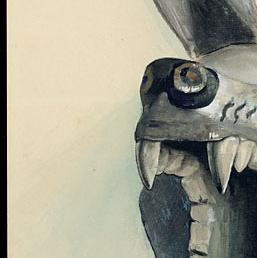
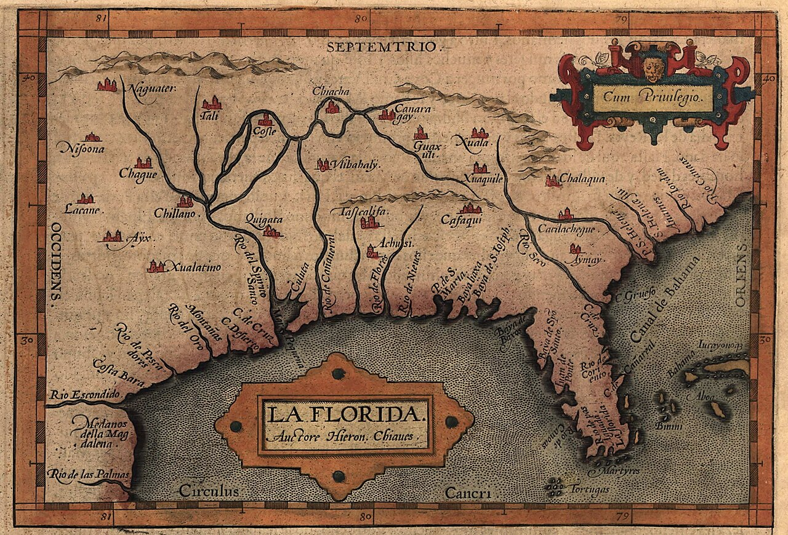
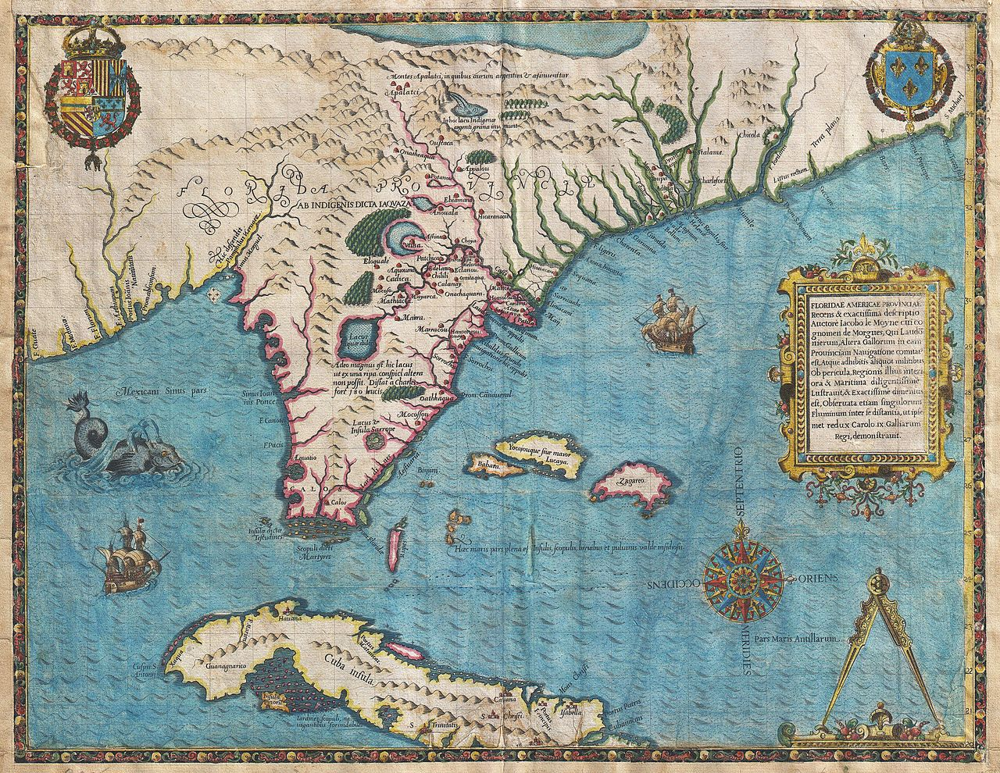
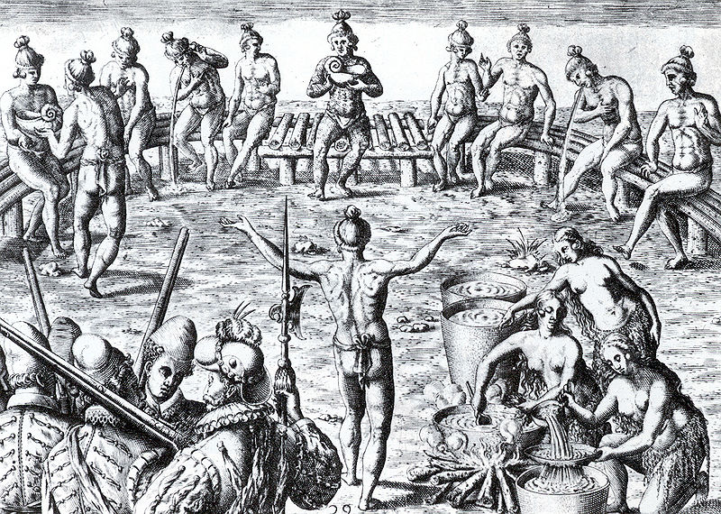
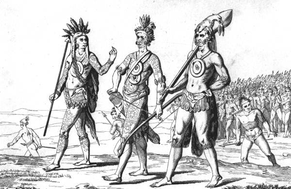
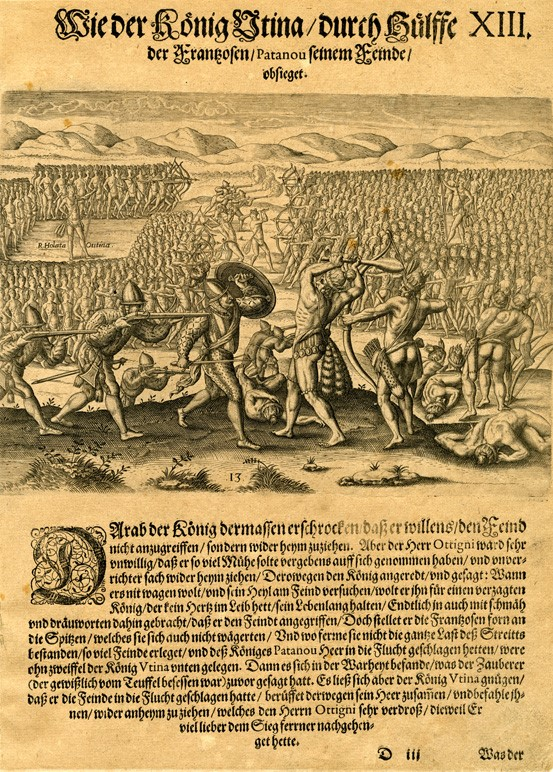

Before Miami was a city, before Ponce de Leon named the coast, six nations shaped these waterways for a thousand years. This is who they were.

The Calusa were the most powerful people in all of South Florida. From their capital on Mound Key, an artificial island built from millions of discarded shells over centuries, their paramount chief commanded tribute from at least fifty towns stretching from Tampa Bay to the Florida Keys. The Spanish called their ruler Carlos and compared his authority to that of Montezuma. His actual title, Fontaneda tells us, was Certepe.
What made the Calusa extraordinary was that they built a complex, hierarchical society without agriculture. They were fishermen. Their common diet was fish, turtle, snails, and whale. They engineered canals through the mangrove coast, controlled fishing weirs that fed thousands, and accumulated enormous wealth from Spanish shipwrecks that broke apart on the Florida reefs. Carlos personally divided the treasure among his subordinate chiefs.
They resisted the Spanish for over two centuries. When Pedro Menendez de Aviles arrived at Mound Key in 1566, he did not conquer Carlos. He married the chief's sister. The Calusa held out until disease, slave raids, and colonial pressure overwhelmed them. In 1763, roughly eighty families boarded boats for Havana. They never returned.
"Carlos, after his father, was lord of these fifty towns and over many more people on the coast and in the interior. In their language, Calusa signifies a fierce people, and so-called for being brave and skillful, as in truth they are."Hernando de Escalante Fontaneda, Memoir, c. 1575
Roughly 350 linguistic fragments, a single attested sentence, and the Key Marco archaeological site. Hear reconstructed Calusa speech.

The Tocobaga controlled Tampa Bay, the largest natural harbor on Florida's Gulf Coast. Fontaneda listed them among the "separate kingdoms" beyond the Calusa sphere, yet their relationship with the southern paramount chief was complicated. Spanish documents from 1604 describe the Tocobaga building twelve war canoes in the "bay of Carlos," suggesting they had been pulled into the Calusa orbit.
Their territory sat along the route Hernando de Soto followed inland in 1539. Tampa Bay was where multiple Spanish expeditions first made landfall. The Tocobaga witnessed the full arc of European contact, from Narvaez's disastrous 1528 expedition through the mission period of the 1600s.
The tension in the record is revealing. Fontaneda calls Tocobaga an "independent king" in one breath, then lists Tampa among Carlos's fifty tributary towns in the next. The Calusa and Tocobaga were likely locked in a shifting power struggle, with the Spanish adding a volatile third element.
"Tocobaga, Abalachi, Olagale, and Mogoso, which are separate kingdoms."Fontaneda, Memoir, c. 1575
A handful of place names. The language is almost entirely unrecorded. Safety Harbor pottery, shell gorgets, and burial mound complexes around Tampa Bay remain.

While the Calusa and Tequesta dominated the coasts, the Mayaimi lived at the center of the peninsula on the shores of what Fontaneda called the "Lake of Mayaimi," which he explained meant "very large." Lake Okeechobee is the largest freshwater lake in the southeastern United States, and the Mayaimi built their civilization around it.
Fontaneda described "many little villages" ringing the lake, each of thirty or forty inhabitants. The towns he named, Cutespa, Tavaguemue, Tomsobe, Enempa, are among the most tantalizing fragments in the record: place names from an entire lakeside civilization that left almost no other trace.
A Spanish pilot taken prisoner in the 18th century described being paddled by canoe through interior waterways to settlements on the lake's banks, which he estimated at seventy-five miles in circumference. The Mayaimi were the inland hub connecting the Atlantic coast, the Gulf, and the Caribbean.
The name "Miami" comes from the Mayaimi, carried down the river that drains Lake Okeechobee to the coast. The modern city sits on Tequesta territory, not Mayaimi, but the name traveled with the water.

The Tequesta lived at the mouth of the Miami River, on Biscayne Bay, exactly where the skyscrapers of downtown Miami stand today. When archaeologists excavated the site in 1998, they found a circle of carved holes in the bedrock, now known as the Miami Circle, that may date back two thousand years. A condo developer had to sell the land for $26.7 million to preserve it.
A Fontaneda fragment describes Tequesta whale hunts: warriors lassoed whales at sea, drove a stake through one nostril, and carried two bones from the head in a sacred chest with their dead. They were fishermen like the Calusa but culturally distinct. Granberry proposed their language may have been Arawakan, connecting them to the Caribbean rather than the Gulf.
In 1568, a Jesuit brother named Francisco Villarreal wrote from the Tequesta mission. He describes mosquitoes so bad he couldn't sleep for days, a young chief who brought a sick child for prayers, witchdoctors who nearly sacrificed four children before the priests intervened, and, with some pride: "We have put on two comedies."
"The mosquitoes are so bad that I spent several days and nights without being able to sleep an hour. No more than thirty stayed while the others went to an island a league from here to eat coconuts."Francisco Villarreal, Letter from Tequesta, 1568
The place name, a few words, the 1568 Villarreal letter, and the Miami Circle. Explore the lexicon.

We know the Jaega mostly through one terrifying encounter. In 1696, Jonathan Dickinson, a Quaker merchant, was shipwrecked near Jupiter Inlet. His journal is one of the most vivid first-person accounts of any Florida tribe.
"About the eighth or ninth hour came two Indian men running from the southward fiercely," Dickinson wrote. "Their countenances were very furious and bloody. They had their hair tied in a roll behind, in which stuck two bones, one shaped like an arrow, the other a spear head." The cacique arrived with thirty warriors and demanded: "Nickaleer? Nickaleer?" Were these English? At one point, Dickinson heard an Indian say, in English, "English son of a bitch."
The Jaega territory ran along what is now Palm Beach County. Like the Ais to the north, they profited from Spanish shipwrecks along the Florida reef, and their hostility to the English suggests long experience with competing European powers on their coast.
Jupiter, Florida is named after the Jobe Indians. English mapmakers misheard "Jobe" as "Jove," the Latin name for Jupiter. Hobe Sound preserves the original pronunciation.

The Ais controlled the Atlantic coast from Cape Canaveral south, a territory now known as the Treasure Coast. The Gulf Stream pushed Spanish treasure fleets close to the Florida reef here, and wrecks were frequent. The Ais grew rich on the debris.
Fontaneda described the scale: riches "found by the Indians of Ais, which perhaps were as much as a million dollars, or over, in bars of silver, in gold, and in articles of jewelry" from ships bound from Mexico and Peru. One passenger alone carried "twenty-five thousand dollars in pure gold." It was this wealth that made Menendez negotiate friendship rather than attempt conquest.
Bernard Romans, writing in 1775, recorded the name "Aisa Hatcha" for the river, one of the few Ais-language fragments to survive. Fontaneda noted he did not speak the Ais language, hinting it may have been distinct from Calusa entirely.
"The riches found by the Indians of Ais, which perhaps were as much as a million dollars, or over, in bars of silver, in gold, and in articles of jewelry made in Havana, Mexico, and Peru."Fontaneda, Memoir, c. 1575
The ethnonym "Ais," the river name "Aisa Hatcha," and fragments in Fontaneda. Archaeological sites along the Indian River Lagoon are extensive.
By the early 1700s, all six peoples were in collapse. European diseases had been devastating their populations since first contact in 1513. Creek and Yamasee slave raiders, armed with English muskets, attacked the remaining settlements. The survivors faced an impossible choice.
Some merged into Creek and Seminole groups migrating south into the depopulated peninsula. Others fled to Cuba. When Britain took Florida in 1763, Bernard Romans recorded the final chapter: "about eighty families" of Calusa remnants departed from the Keys to Havana.
What remains are fragments in Spanish archives, a handful of archaeological sites, and the place names they left behind: Miami, Tampa, Okeechobee, Sanibel, Hobe Sound. This project exists to recover what can still be recovered.
Hear the reconstructed language